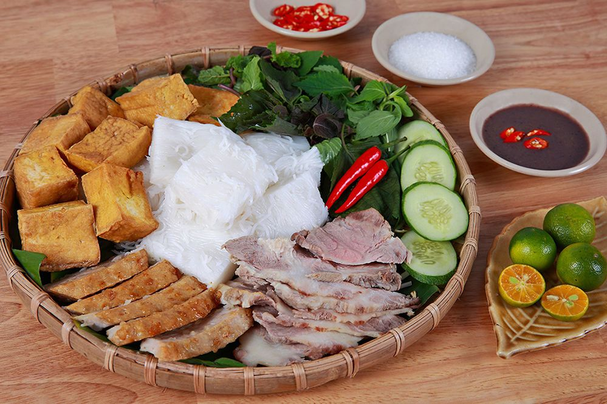
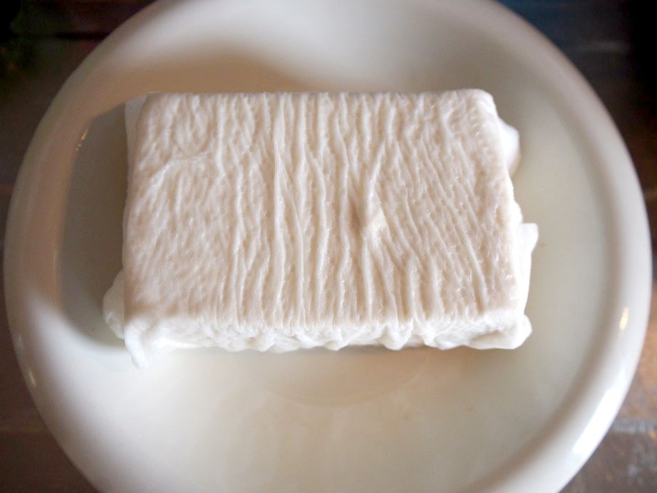
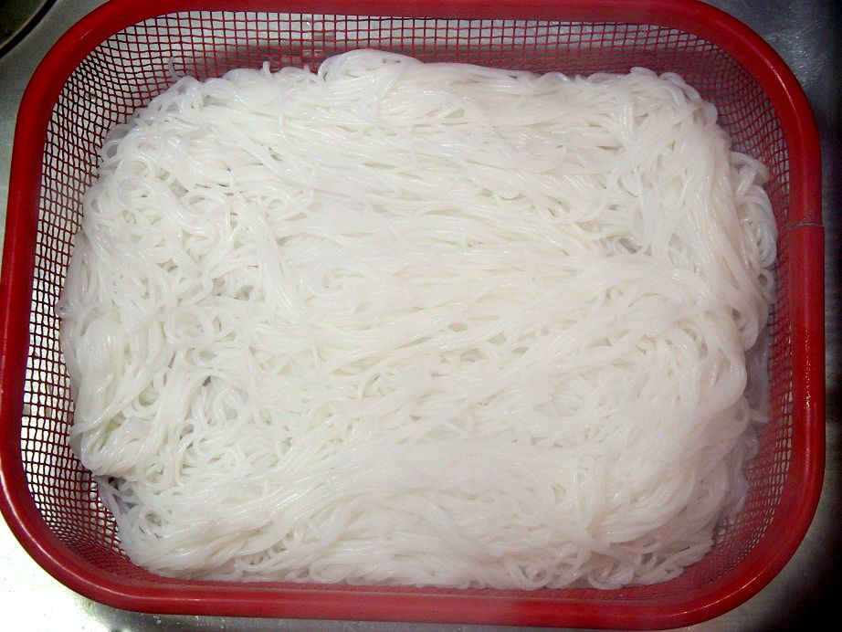
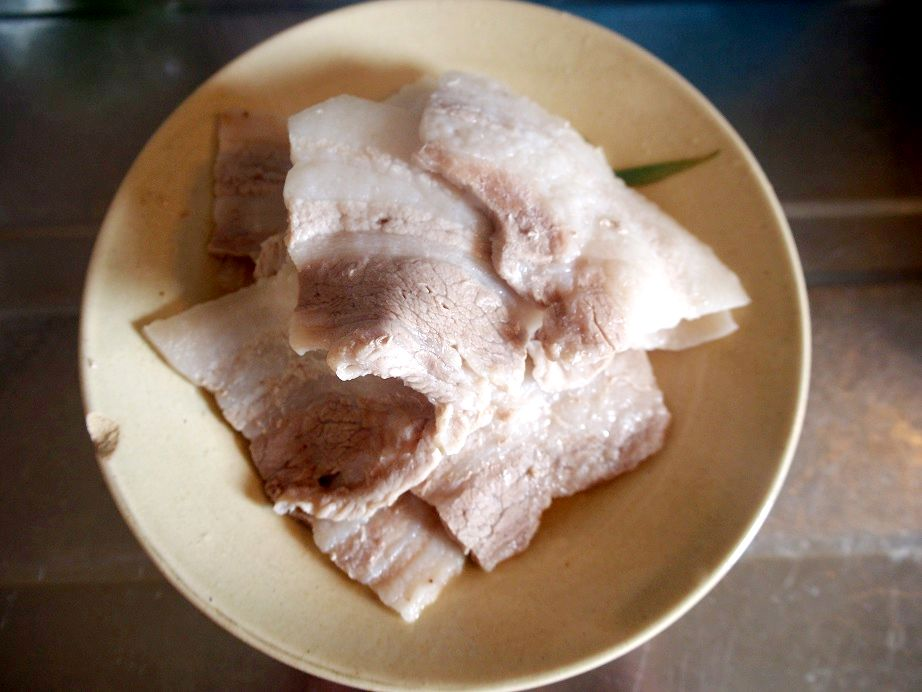
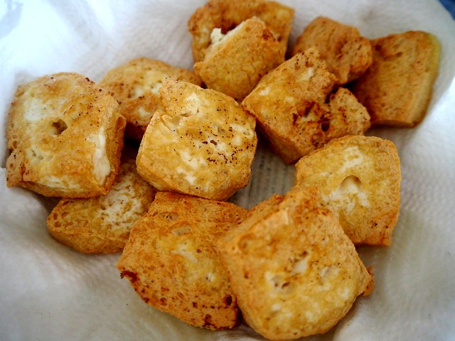
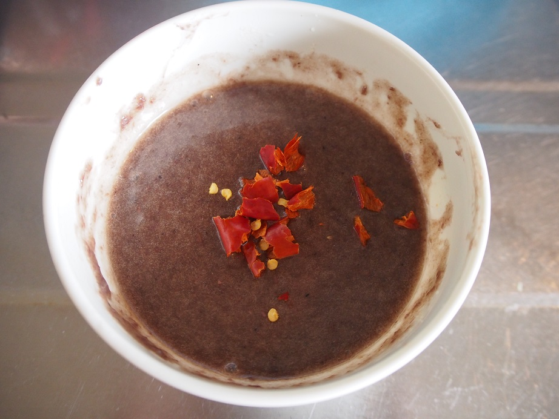
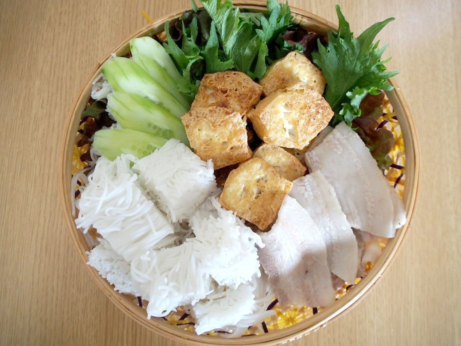

ブン・ダウ・マム・トム

紹介：
ブンダウマムトム(Bún đậu mắm tôm)とは揚げ豆腐とブンという麺にマムトムというソースをつけて食べるベトナム北部の名物料理です。 フォーが一般的にベトナムのお店で食べられるものなのに対して、ブン(Bún)は主に家庭で食べられる麺です。 ブンダウマムトムではこのブンを固めたものを食べやすくカットして出されます。 ダウ(Đậu)はブンドウマムトムでは熱々の揚げ豆腐で出してくれます。 マムトム(Mắm tôm)はエビを発酵させた調味料で紫色をしています。
材料：
- 木綿豆腐 1丁
- 豚バラ肉 100g
- ブン（乾麺） 80～100g
- 大葉 適量
- きゅうり 1/2本（小さめのものなら1本）
- マムトム（海老の発酵調味料） 大さじ1.5～2
- 砂糖 大さじ2
- ライム（レモン）果汁 大さじ1～2
作り方：
- 豆腐の水切りをする

ベトナムの豆腐は水分が少なめ＆固めなので、それに近づけるためにまず木綿豆腐を水切りします。 その後、念には念を押して、上にお皿などをのせ、さらに水切りをします。
- ブンをゆでて固める

ゆで時間は袋の表示通りでお願いします。
- 豚肉をゆでる

次は、具の豚肉を弱火で水からゆでていきます。ゆで時間は20分ほどでしょうか。 よく売られている薄切り肉だと薄いので、焼肉用ぐらいの厚みがちょうどいいです。
- 豆腐を揚げる 
- マムトムだれを作る

耐熱のおわんに、マムトム大さじ２ → 砂糖大さじ2 → 豆腐を揚げたときの油大さじ2 を入れます。
- 盛り付ける 
感想：
マムトムはそのままだと強烈なにおい＆塩気がありますが、砂糖やライム果汁、揚げ油を入れることで幾分食べやすくなります。 さっぱりした豆腐やきゅうりをおいしく食べられる調味料ですので、食べたことがない方は、ぜひ一度マムトムにチャレンジしてみてください。